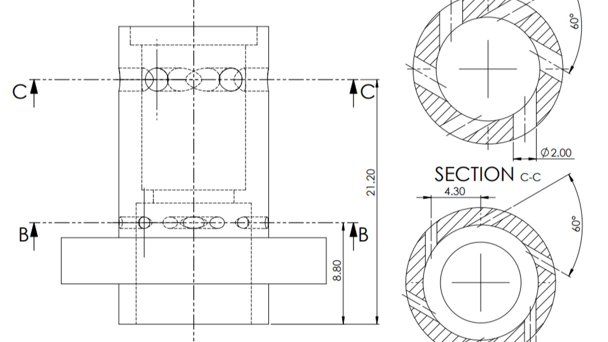
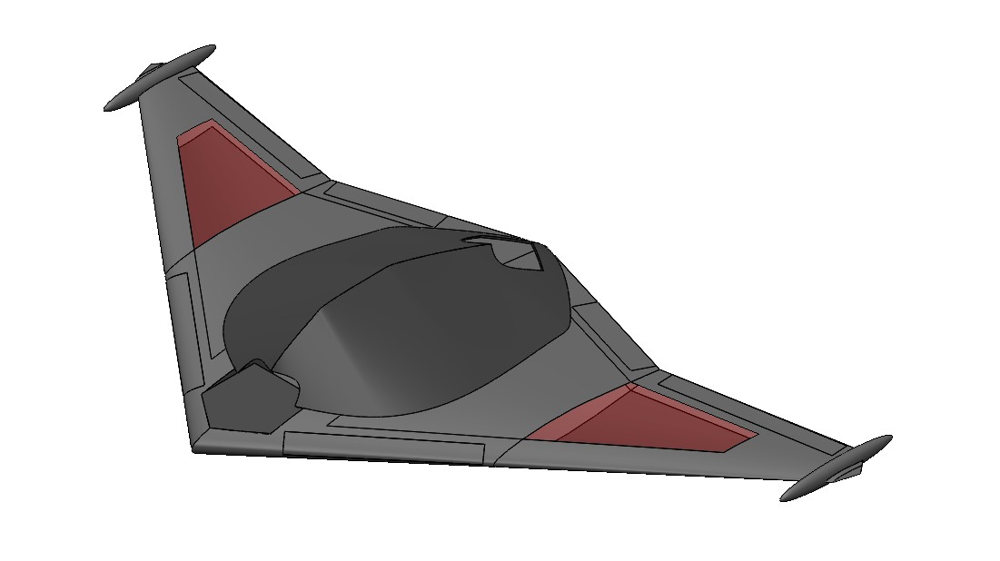
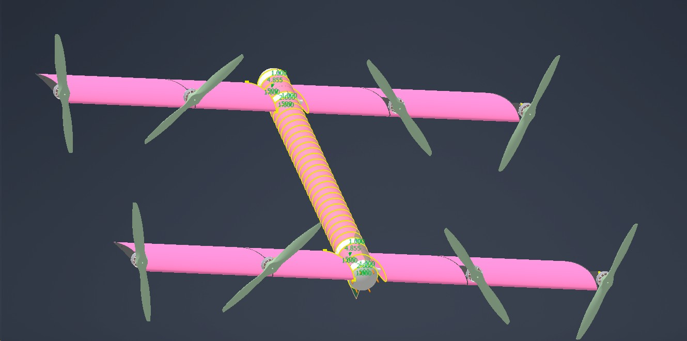
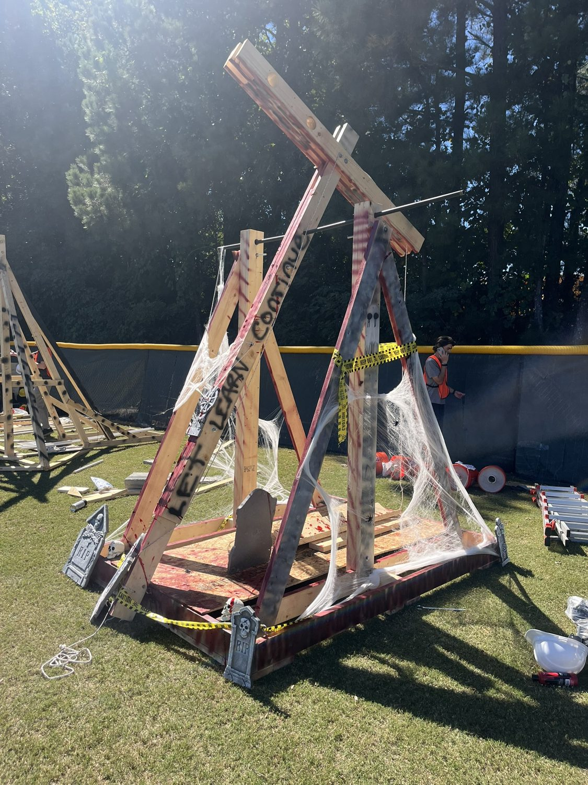
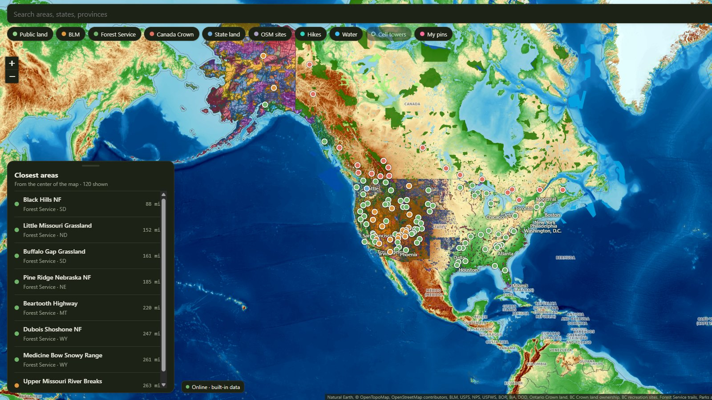

Sheet 01
Hands-On Build
 Fig. 01
+ Add Photo
Fig. 01
+ Add Photo
Aerial Robotics Competition TeamSep 2023 – Apr 2025
Team Lead
Powered Autonomous Delivery Aircraft (PADA)
SAE AERO Design — Team Lead, 20+ members
- Led the full design, manufacturing, and flight-test lifecycle of a carrier-launched delivery aircraft, from CAD through fabrication and integration
- Manufactured a carbon fiber mold and performed a wet layup to construct the aircraft's fuselage
- Built and flew a custom flying wing that detached mid-flight from a larger carrier aircraft and autonomously navigated to landing coordinates it detected in flight
- Configured and tuned a Matek H743 flight computer to achieve stable flight on an inherently unstable airframe
Carbon Fiber LayupArduPilotMatek H743
 Fig. 02
+ Add Photo
Fig. 02
+ Add Photo
Kennesaw Rocketry TeamDec 2025 – Jun 2026
Operations / CFD
Intercollegiate Rocket Engineering Competition Rocket
Vice President — Team Operations Lead (ended June 2026)
- Led team operations for the Intercollegiate Rocket Engineering Competition (IREC) build, coordinating schedules and communication across Rocket Design, Avionics, and Payload subteams
- Contributed to airframe design through high-fidelity CFD analysis, optimizing the rocket body and camera mount geometry against aerodynamic drag
- Assisted with fiberglass construction of the rocket body and resolved fin-to-airframe gap issues on the fin can assembly through iterative SolidWorks corrections
- 3D printed the camera mount and payload components, and standardized build documentation across the team
CFD / Drag OptimizationFiberglass Layup3D PrintingSolidWorksIREC

Fig. 03 + Add PhotoKennesaw Rocketry TeamDec 2025 – Jun 2026
Liquid Propulsion
Bipropellant Rocket Engine
Vice President; previously Liquid Propulsion Lead (ended June 2026)
- Designed and sized a N₂O / ethanol bipropellant engine targeting 250 lbf thrust at an O/F ratio of 4.8 — thrust equations, injector pressure drop, chamber pressure, and mass-flow calculations
- Designed an injector cold-flow test stand around a pressurized nitrogen supply (~150–220 psi) for a water cold-flow injector test
- Reviewed and refined a coaxial swirl injector assembly through SolidWorks design checks ahead of fabrication
N₂O / Ethanol250 lbf targetSolidWorksCold-Flow Test

Fig. 04Aircraft Design and Performance — Team of 4Spring 2026
Conceptual Design
Ship-Launched Multi-Domain ISR UAV
ENGR 3802 · Advisor: Dr. Gaurav Sharma · Responsible for airfoil selection, CAD/CFD, and final sizing
- Designed a ship-launched, tailless flying-wing UAV for intelligence, surveillance, and reconnaissance (ISR) in both the air and underwater: 15.4 ft span, 40° leading-edge sweep, 2,050 lb takeoff weight, and a single internal PW610 turbofan
- Met every requirement with margin: 1,060 NMi range against 1,000 NMi, 47 min loiter against 30 min, and 89 kt stall speed against a 97 kt limit, with a cruise L/D of 13.5 at Mach 0.7
- Developed the dual-domain transition: sealing doors close the engine inlet and exhaust, the aircraft lands on water in a deep stall at about 10° pitch, wing-root fuel tanks flood to serve as ballast, and retractable wingtip thrusters drive underwater transit to a recovery vessel
- Selected a spanwise airfoil blend from a thick centerbody to a thin tip for transonic efficiency and internal volume, and ran four-concept trade studies on aerodynamic efficiency, stealth, structural complexity, stability, and dual-domain capability
- Chose a hybrid CFRP and aluminum 5083 structure with Inconel in the exhaust region and EPDM seals, and identified water-landing slamming loads as the primary risk for follow-on FEA and drop testing
Conceptual DesignAircraft SizingAirfoil SelectionCAD / CFDTrade StudiesFlying Wing

Fig. 05DARPA Lift Challenge — Team of 6 StudentsFall 2025 – Spring 2026
Conceptual Design
Tandem-Wing VTOL UAV for the DARPA Lift Challenge
Aerodynamic and planform design lead
- Led the aerodynamic and planform design of a tandem-wing VTOL UAV concept for the DARPA Lift Challenge, which calls for a drone under 55 lb that lifts a payload of at least 110 lb, a 4:1 payload-to-weight ratio
- Designed a blown-wing configuration with eight propellers across two tandem wings, using propeller slipstream over the wings to add lift
- Built a fuselage and wing sections from foam core, with fiberglass rebar as the structural support for the fuselage and wings
- Completed as a student design project, not as an entry in the competition
Aerodynamic DesignPlanform DesignTandem WingBlown WingVTOLFoam-Core Construction

Fig. 06 + Add PhotoDynamics — Kennesaw State UniversityFall 2024
Course Project
Pumpkin Launch Trebuchet
Design, build, and launch
- Designed and built a 12 ft trebuchet with a 6 ft arm for Kennesaw State's annual pumpkin launch challenge, capable of throwing 15 lb pumpkins
- Performed engineering analysis from first principles and dynamics to size the arm, sling, and counterweight
- Built it from primarily wood, using buckets filled with poured cement as a 200 lb counterweight
DynamicsMechanism DesignWood ConstructionCounterweight Sizing

Fig. 07 + Add PhotoPersonal ProjectsOct 2026 – Present
GIS / Mapping
GIS Mapping: Dispersed Camp Map and 3D Hiking Terrain Map
Web maps built from open geospatial data, terrain elevation data, and GPS metadata
- Built the Dispersed Camp Map, a single-file Leaflet web app that overlays color-coded public land (BLM, Forest Service, parks, state, tribal, military) from the BLM Surface Management Agency data, so tapping any spot shows who manages it
- Integrated multiple GIS data sources: US Forest Service trails and road-use maps, Ontario and BC Crown land, wildfire perimeters, and OpenStreetMap campsites, water points, and cell towers
- Added offline regions with USGS topo tiles, GPS track recording with GPX export, and saved pins with photos, ratings, and signal notes, all stored on the device
- Packaged it as an installable progressive web app for iPhone and Android, with a service worker so it launches with no signal
- Built an interactive 3D terrain map of my hiking photos in MapLibre GL JS: a Python script reads the GPS coordinates, elevation, and timestamp from each photo's EXIF metadata to place the pins, with satellite imagery over open elevation data, hillshading, and preloaded tiles for smooth camera flights between stops
GISLeafletMapLibre GL JSDigital Elevation ModelsEXIF / GPS DataOffline PWAPythonJavaScript
Open the Dispersed Camp Map → · GitHub → · 3D Hiking Terrain Map →